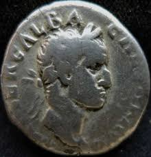

Numismática
O que é numismática, sua definição, posições entre as ciências e as divisões da numismática?
Numismática é a ciência que estuda a moeda de todos os povos e de todos os tempos, classificando-a, interpretando-a e descrevendo-a sobre
vários aspectos. Sua denominação provém de numus ou numisma, que significa em latim - moeda.
Com este artigo da Revista de História iniciamos a publicação das notas de aula do Curso de Numismática,
ministrado — como professor-visitante — pelo Dr. Álvaro da Veiga Coimbra, presidente da Sociedade Numismática Brasileira, na Faculdade de Filosofia, Ciências e Letras da Universidade de São Paulo, curso esse aberto aos alunos da Seção de História e como curso de extensão universitária aos demais interessados.
Fazemos esta publicação, porque é pela primeira vez — ao que sabemos — que se faz um curso dessa natureza em Universidade no Brasil,
e também por ser de grande interesse para o conhecimento dos nossos alunos.
E. Simões de Paula (1965)
